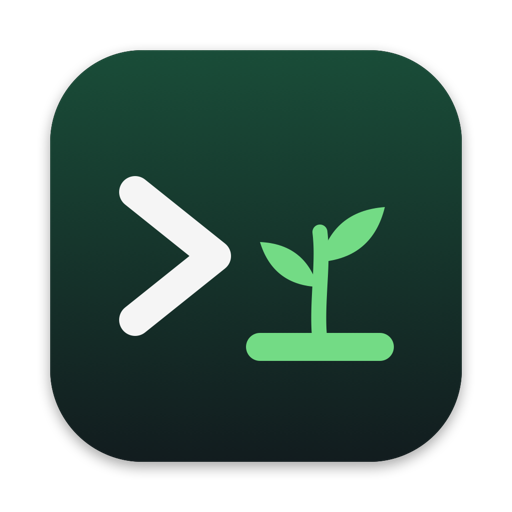
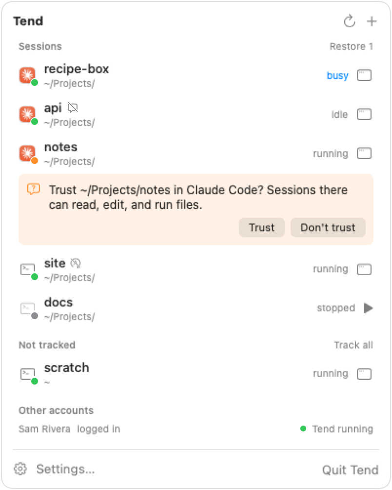

A menu bar app and CLI for macOS
Tend
Tend keeps your long-running terminal sessions running, and brings them back after your Mac restarts.
Built with Claude Code in mind: a restored Remote Control session reconnects to its last conversation.
Get Tend
Not released yet
Or install with Homebrew
brew install --cask schaffernation/apps/tend
This command works after the first release.

What Tend does
Tend keeps a list of your long-running terminal sessions. It has two parts: tend, a command-line tool that works over ssh, and a menu bar app that shows your sessions and runs tend for you.
-
Sessions that keep running
Each session runs in tmux, so it keeps running after you close your terminal or disconnect from ssh.
-
Back after a restart
After your Mac restarts, Tend starts your sessions again, in the same folders, with the same commands.
-
In the menu bar
See which sessions are running and which are stopped. To start a session in a folder, drop the folder on Tend's icon. The list works from the keyboard, too.
-
Any long-running program
Run a development server, or a script that keeps a connection open. To teach Tend about a program, add it as an app, and describe how to resume it and which prompts it waits on.
For Claude Code users
Suppose you run several Claude Code sessions with Remote Control, one per project, so you can check on them from your phone or from claude.ai/code. When your Mac restarts, every one of them ends. Tend brings them back.
- See what each session is doing. The menu bar shows whether each Claude session is busy or idle, and which ones wait for you to answer a question.
- Answer the trust prompt. In a folder that you haven't trusted yet, Claude asks whether to trust it, and waits. Click Trust or Don't trust on the session's row, or run
tend answer NAME yes. - Come back to the same conversation. After a restart, Tend reconnects each Remote Control session to its last conversation, if Remote Control still remembers it. Tend also records the conversations each session runs, so you can bring one back with
tend resume NAME.
Tend is an independent project. It isn't made by or affiliated with Anthropic.
Requirements
- macOS 14 or later, on Apple silicon or Intel.
- tmux. If you install Tend with Homebrew, Homebrew installs tmux for you. Otherwise, run
brew install tmux. - Python 3.8 or later. If you have Homebrew or the Xcode Command Line Tools, you already have it.